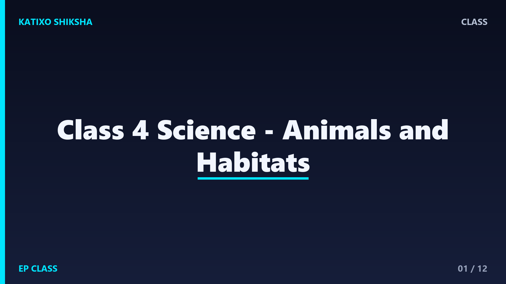

Class 4 Science - Animals and Habitats

Slide 1Animals live everywhere around us: in homes, farms, forests, deserts, water, trees, and soil. Some animals are big, some are tiny, some walk, some fly, and some swim. Science helps us understand how animals live and stay safe.

Slide 2A habitat is the natural home of an animal. A good habitat gives food, water, shelter, and space. A fish needs water. A camel is suited to the desert. A bird needs a safe place to nest.

Slide 3Many animals live on land. Dogs, cows, lions, elephants, and ants are land animals. They use legs to walk, run, jump, or climb. Their body parts help them find food, escape danger, and take care of young ones.

Slide 4Fish, whales, crabs, frogs, and turtles spend much time in water. Fish breathe with gills and move using fins. Ducks have webbed feet that help them swim. Water animals have body parts suited to water life.

Slide 5Birds have feathers, wings, and beaks. Many birds can fly, but not all birds fly well. A bird uses its beak to pick food. Different birds have different beaks depending on what they eat.

Slide 6Insects are small animals with six legs. Many insects have wings. Butterflies, ants, bees, and grasshoppers are insects. Some insects help plants by carrying pollen, while some may damage crops or spread disease.

Slide 7Animals eat different kinds of food. Herbivores eat plants. Carnivores eat other animals. Omnivores eat both plants and animals. A cow is herbivore, a tiger is carnivore, and a bear is omnivore.
Slide 8A food chain shows how food energy moves. Grass is eaten by a grasshopper. A frog eats the grasshopper. A snake may eat the frog. Food chains remind us that living things are connected.

Slide 9An adaptation is a special feature or behavior that helps an animal survive. Camels store fat and can live with little water for some time. Ducks have webbed feet. Some animals use camouflage to hide.

Slide 10Animals protect themselves in different ways. Some run fast, some hide, some have hard shells, and some move in groups. A turtle uses its shell. A deer runs fast. A porcupine has sharp quills.

Slide 11Domestic animals depend on people for food, water, shelter, and care. We should be kind to animals and never tease or hurt them. Clean water, proper food, and a safe place keep animals healthy.
Slide 12Let us revise. What is a habitat? Name one water animal. What do herbivores eat? Give one animal adaptation. Why should we protect animal homes? Explaining these answers means your animal science foundation is strong.